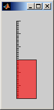
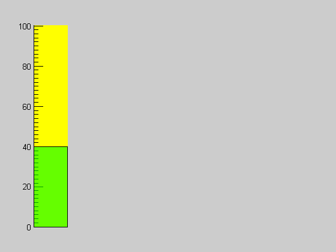

THERMOMETER makes it easy to include a thermometer display in your real-time data acquisition and analysis application. It takes 2 steps to use THERMOMETER. First, you initialize the thermometer with basic information needed for the display (display range and initial temperature). After that, all you need to do is pass the current temperature to the thermometer.
This documentation starts with the simplest syntax for the two steps, then provides a few more advanced options.
hAx = THERMOMETER(Trange) converts the current axes to a graphical thermometer display. If no figures exist, a new one will be created. Trange = [Tmin Tmax] specifies the minimum and maximum of the temperature scale. Alternatively, Trange = [Tmin Tincr Tmax] specifies the scale increment, too. hAx is a required output in this case, as it will be passed to all subsequent calls to THERMOMETER. Specifically, hAx is the handle to the axis containing the thermometer.
THERMOMETER(hAx, T) updates the thermometer display in axis hAx to the specified temperature T. hAx was either passed to THERMOMETER during initialization, or was returned from the initialization call.
THERMOMETER(hAx, Trange) creates a new graphical thermometer display in the specified axis, hAx. Trange is as defined above.
For users who would like more control over the display, [hAx,hPatch] = THERMOMETER(...) returns a handle to the patch object used to represent the thermometer value (i.e., the mercury).
hAx = thermometer([0 30]); %Create a thermometer in a new figure. Range is 0 to 30 degrees thermometer(hAx,15); %Set current temperature to 15 degrees
Create figure and axes
figure; hAx = axes('Position',[.1 .1 .1 .8]); %Create a thermometer on axes hAx. Scale goes from 0 to 100 in steps % of 20. Initial value is 40. [hAx,hPatch] = thermometer(hAx,[0 20 100],40); % Set a new color scheme set(hAx,'Color','y'); % Yellow background set(hPatch,'FaceColor','g') % Green mercury